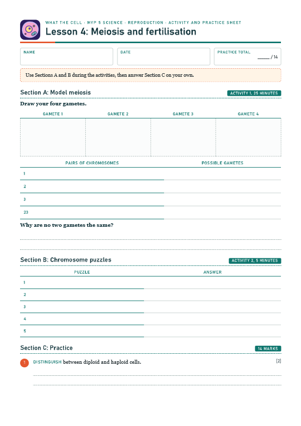

By the end of the lesson you can
- Distinguish between diploid and haploid cells
- Describe what meiosis produces
- Explain how meiosis and fertilisation create variation
- Compare mitosis and meiosis
Keys: arrows or a presentation clicker move the slides, F for full screen. Slides with a red dot have a video or simulation.
Videos (all 5 minutes or less)
- 4:55
Meiosis
FuseSchool. While you watch: Where in the body does meiosis happen? Slide 8.
- 4:32
Sperm and egg cells
FuseSchool. While you watch: Why does a sperm cell have many mitochondria? Slide 11.
Simulations
- Lab
- Lab
Print and practise

Activity and practice sheet
Used in the lesson’s activities, with practice questions. Your teacher has the answers.
Download (PDF)Lesson 4 slides
All 24 slides in one file, to read again or print. The video buttons on the slides open YouTube.
Download the slides (PDF)Revising? The Revision tab on the unit page has the unit notes and review.
Notes: Meiosis and fertilisation
homologous pair
Two chromosomes of the same size carrying the same genes: one from mum, one from dad. For example: the two chromosome 1s.
karyotype
A picture of all the chromosomes of a cell, arranged in pairs by size. For example: used to check for missing or extra chromosomes.
diploid
Two sets of chromosomes, one from each parent. Human body cells: 46.. For example: a muscle cell.
haploid
One set of chromosomes: one from each pair. Human gametes: 23.. For example: a sperm or egg.
meiosis
Cell division in the testes and ovaries that makes four haploid gametes, all genetically different. For example: making sperm.
crossing over
In meiosis, the two chromosomes of a pair swap sections, making new mixes of genes.
independent assortment
Each pair is shared out at random, so a gamete gets a random mix: about 8.4 million mixes in humans.
random fertilisation
Any one of millions of sperm can fertilise the egg.
adaptation
A feature that helps a cell or organism do its job or survive. For example: the sperm's tail.
sex chromosomes
Pair 23: X and Y. XX develops as female, XY as male.. For example: the Y carries a gene that starts male development.
Key words
| meiosis | cell division that makes four genetically different haploid gametes |
|---|---|
| homologous pair | two matching chromosomes, one from each parent |
| diploid / haploid | two sets (46 in humans) / one set (23) |
| crossing over | paired chromosomes swapping sections in meiosis |
| independent assortment | pairs shared out at random into gametes |
| sex chromosomes | X and Y; XX female, XY male |
| zygote | the diploid cell formed at fertilisation |